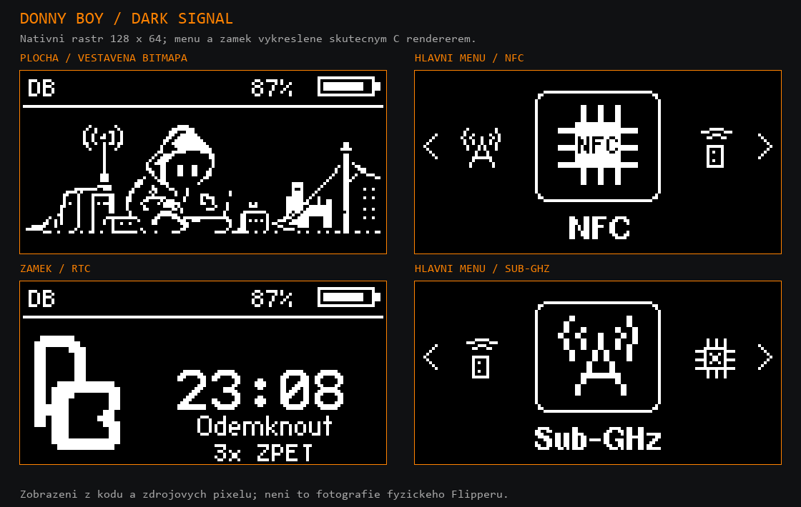

Vlastní sestavení firmwaru pro Flipper Zero. DARK SIGNAL: vlastní menu, pixelová plocha a tmavé rozhraní přímo ve firmwaru. České prostředí a otevřený vývoj.
[ STAV VYDÁNÍ ] DONNY BOY 1.0.3 · vydání je dostupné · kompilace a balíčky ověřeny · fyzický test této verze zatím neproběhl.
DARK SIGNAL je přímo ve firmwaru
Od verze 1.0.3 používá DONNY BOY výchozí motiv DARK SIGNAL: vodorovné menu s velkou ikonou, vlastní symboly aplikací, postavu u terminálu, zámek s DB a hodinami i tmavé nastavení. Motiv je součástí instalace; nemusíš ho ručně kopírovat na SD kartu.

Náhled z nativních pixelů a kódu vykreslování; nejde o fotografii fyzického Flipperu. Displej zařízení je monochromatický.
Vydání obsahuje soubory firmwaru a balíčky sestavení. Před instalací ověř, že vybíráš správný soubor pro své zařízení. Soubory aktuální verze prošly automatickou kontrolou. Fyzický test starší verze 1.0.1 proběhl bez pozorovaných chyb.
Překlad uživatelského rozhraní je průběžná práce. Cílem jsou české texty na displeji bez háčků a čárek; zatím nelze tvrdit, že je přeložen úplně každý řetězec.
Nové vydání s výchozím motivem DARK SIGNAL. Sestavení verze 1.0.3 bylo úspěšné a vydání je dostupné ke stažení. Nová verze zatím nebyla fyzicky otestována. Fyzický test bez pozorovaných chyb se týkal verze 1.0.1. Základ aktuálního vydání: unlshd-094.
Řiď se oficiálním postupem aktualizace a pokyny projektu. Nezaměňuj DFU, update balíček a SDK.
Po aktualizaci ověř start zařízení a základní funkce.
Pokud si nejsi jistý, který soubor zvolit, nepokračuj naslepo — nejprve si ověř typ souboru a způsob instalace.
Bezpečnost a odpovědné použití
DONNY BOY není oficiální firmware Flipper Devices. Používej zařízení a jeho funkce pouze na vlastních systémech nebo s výslovným oprávněním a v souladu s platnými zákony.
Firmware je komunitní projekt poskytovaný bez záruky. Fyzický test starší verze 1.0.1 proběhl bez pozorovaných chyb. Aktuální verze má ověřené sestavení a distribuční soubory; fyzický test této verze zatím neproběhl.